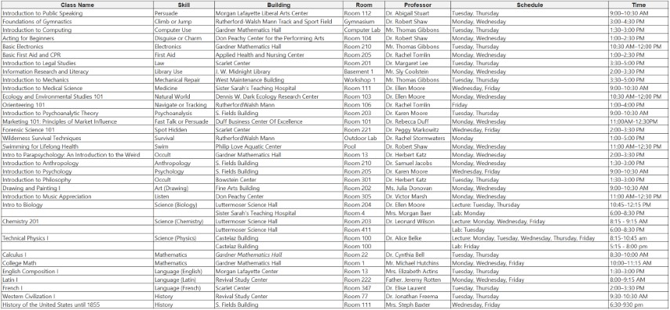

Recommendation: Playing a character < = 39 years old is thematically appropriate. But nothing is stopping you from making a feisty middle-ager or spunky retiree. Just work with the party to explain why these generationally disparate people are spending so much time together.
House Rule: School Life
In this campaign, players must balance academic responsibilities with their mystery-solving adventures. Attending class not only helps avoid failing grades but also provides in-game bonuses through skill improvements.
See Character Creation for more details about making a character in the world of Caroline College.
Making The Grade
-
Class Selection: Each player must choose 5 classes each semester.
- Freshman Fall Semester:
- 3 required classes: One science, one history, and one language.
- 2 optional classes: Chosen from the list of electives.
- Freshman Fall Semester:
-
Passing a Class:
- Two exams will be held during the semester: a mid-term and a final
- Making the mid-term advancement will grant a 'penalty' die on the final
- As you want to 'fail' an advancement roll, the penalty die is a benefit
- Making the mid-term advancement will grant a 'penalty' die on the final
- Passing an exam involves making an advancement roll in the relative topic
- Luck may be used on this roll! If you use luck to pass either of the two exams, you forfeit ALL advancements rolls from the course as well as attendance bonus.
- Sometimes passing is more important.
- Luck may be used on this roll! If you use luck to pass either of the two exams, you forfeit ALL advancements rolls from the course as well as attendance bonus.
- Courses covering multiple skills
- If a course covers multiple skills, then the player which ONE skill they will make the advancement for; not both
- Different skills may be selected for the mid-term and final
- Two exams will be held during the semester: a mid-term and a final
-
Failing Classes
- Two consecutive semesters with five or fewer classes pass may result in academic probation.
- This can cause the student to lose access to campus facilities (including clubs and organizations), story line options, or other narrative consequences
- Two consecutive semesters with five or fewer classes pass may result in academic probation.
-
Honor Roll
- Two consecutive semesters with 10 or more passed classes may result in honor role-playing
- This may cause the character to gain access to new campus facilities, people, permissions and other bonuses.
- Two consecutive semesters with 10 or more passed classes may result in honor role-playing
-
Class Attendance
- Attending classes regularly will grant +5% to the relative skill at the end of the semester.
- This is in addition to the advancements made from the mid-term and final.
- In courses that involve more than one skill, points will be distributed between the skills as the player wishes.
- Meeting the attendance requirement, but failing a class, will still grant the bonus (you at least learned something by showing up).
- All courses have a college required 70% attendance policy for all held classes.
- Meeting this requirement is determined narratively.
- Attending classes regularly will grant +5% to the relative skill at the end of the semester.
-
Tension Mechanic: Players must choose between attending classes or pursuing adventures, balancing academic success with their investigations.
Limited Occupation: College Student
All characters at Caroline College use the occupation College Student.
- Occupation Skill Points: EDU × 3 (Reduced from the standard to reflect starting students but with more opportunities for advancement during the campaign).
- Credit Rating: 5–10
- Suggested Contacts: Other students.
- Skills:
- Language (Own or Other)
- Library Use
- Listen
- Three Fields of Study (choose three academic skills relevant to your character's studies)
- Any Two Other Skills as personal or era specialties
Class Descriptions and Schedule
Required Science Classes (Both lecture and lab must be attended)
- Intro to Biology
- Description: Basic biological concepts with a focus on cellular structures, genetics, and ecology. The lab allows hands-on experience, where strange things might start to happen.
- Chemistry 201
- Prerequisite: Chemistry 101, College Math or greater, or permission from the department chair
- Description: Analyzing chemical bonding using atomic theory, stoichiometric methodologies, interpreting graphical chemical data and an introduction quantum mechanics. You never know when knowledge of chemical substances might help solve an occult mystery.
- Technical Physics I
- Prerequisite: Calculus I, or permission from the department chair
- Description: Calculus based introduction to physics. Topics include elementary forces, work and optics.
Required History Classes (Choose 1)
- Western Civilization I
- Description: A comprehensive study of Western history, covering ancient civilizations through the Renaissance, with key insights into the origins of arcane practices.
- History of the United States until 1855
- Description: An exploration of U.S. history from colonization to modern times. Local Wisconsin history becomes relevant to uncovering the hidden past of Watashuka.
Required Language Classes (Choose 1)
- English Composition I
- Description: Focuses on writing and analysis
- Introductory Latin
- Description: Introduction to Latin
- French I
- Description: Basics of French language
Optional Classes (Choose 2)
- Introduction to Public Speaking
- Description: This course teaches students the basics of effective verbal communication, focusing on persuasive speaking techniques, managing audience perception, and developing confidence in public speaking. Students will engage in debates, presentations, and impromptu speeches.
- Foundations of Gymnastics
- Description: An introduction to physical conditioning, agility, and body mechanics. The course covers basic skills in climbing, jumping, running, and balance through physical training and exercises. Designed for students looking to enhance their physical prowess.
- Intro to Parapsychology: An Introduction to the Weird
- Description: This course explores the fringes of scientific inquiry, delving into phenomena such as telepathy, clairvoyance, psychokinesis, and hauntings. Students will examine case studies, historical research, and conduct their own experiments to understand the possible connections between the mind and supernatural occurrences. Expect things to get weird.
- Introduction to Computing
- Description: Students will learn the fundamentals of computing, including basic programming, data entry, and information processing. The course emphasizes practical computer applications in various fields.
- Acting for Beginners
- Description: This course focuses on the foundations of acting, including role-playing, physicality, and emotional expression. Students will learn how to embody different characters, effectively altering their appearance and persona through performance techniques.
- Basic Electronics
- Description: An introductory course covering basic principles of electricity, circuits, and electronic components. Students will engage in hands-on projects to understand the fundamentals of building and repairing electronic systems.
- Marketing 101: Principles of Market Influence
- Description: This introductory course covers the fundamental concepts of marketing, including market research, consumer behavior, advertising strategies, and product positioning. Students will learn how to craft persuasive messages and develop marketing plans, with a focus on influencing consumer decision-making in various industries.
- Basic First Aid and CPR
- Description: Students will learn essential first aid techniques, including CPR, wound treatment, and emergency response. The course is hands-on and prepares students for basic medical emergencies in everyday situations.
- Introduction to Legal Studies
- Description: This course introduces the foundational concepts of law, including constitutional law, criminal justice, and civil procedures. Students will explore real-world case studies and participate in mock trials.
- Information Research and Literacy
- Description: This course teaches students how to efficiently locate, evaluate, and use information from various sources, including libraries, archives, and digital databases. Emphasis is placed on research strategies and citation techniques.
- Introduction to Mechanics
- Description: This hands-on course introduces students to the fundamentals of mechanical systems, focusing on repairing and maintaining machines, vehicles, and industrial equipment. Students will work in a lab setting, learning to use tools and heavy machinery.
- Introduction to Medical Science
- Description: Designed for pre-med students, this course introduces the basics of human anatomy, pathology, and medical ethics. Students will explore medical case studies and observe hospital procedures.
- Ecology and Environmental Studies 101
- Description: This course explores ecosystems, biodiversity, and environmental conservation. Students will learn about the interconnections between species and their environments through fieldwork and lab exercises.
- Orienteering 101
- Description: A practical course in map reading, compass use, and wilderness navigation. Students will engage in field activities, learning how to navigate different terrains and track wildlife.
- Introduction to Psychoanalytic Theory
- Description: This course introduces the basic principles of psychoanalytic theory, including concepts such as the unconscious, repression, and dream interpretation. Students will examine foundational case studies from Freud and Jung.
- Forensic Science 101
- Description: Students will learn basic forensic techniques, focusing on crime scene investigation and evidence gathering. Emphasis is placed on attention to detail and spotting hidden clues during investigations.
- Wilderness Survival Techniques
- Description: This course teaches the fundamentals of wilderness survival, including shelter building, fire-making, and finding food and water in the wild. Students will participate in hands-on field exercises.
- Swimming for Lifelong Health
- Description: Students will learn swimming techniques, water safety, and endurance training. This course is ideal for beginners or those looking to improve their swimming skills.
- Introduction to Anthropology
- Description: This course explores human cultures, ancient practices, and the development of civilizations. A particular focus is placed on the cultural practices of indigenous groups, such as the Ho-Chunk Nation, providing key insights into their sacred sites and traditions.
- Introduction to Psychology
- Description: This course studies the human mind and behavior, including key psychological theories on cognition, perception, and social behavior. It is particularly useful for understanding the motivations of NPCs and evaluating mental health or sanity during investigations.
- Public Speaking
- Description: This course provides instruction on developing persuasive speaking skills, helping students gain confidence in communication. It covers techniques for influencing and convincing others, skills that are useful during interactions with NPCs and negotiations.
- Introduction to Philosophy
- Description: A deep dive into metaphysical questions and esoteric thought, this course examines classical and modern philosophical theories. Special attention is given to occult philosophies and ancient belief systems, making it ideal for players interested in occult knowledge.
- Introduction to Theater
- Description: This course introduces students to improvisation, performance, and role-playing. Students will learn how to quickly adapt their personas and use verbal techniques to deceive or convince others, perfect for moments when quick thinking and fast talk are essential.
- Drawing and Painting I
- Description: This studio-based course teaches the basics of drawing and painting techniques. Students will develop their skills in artistic expression, which can be used for sketching clues, analyzing artworks, or interpreting occult symbols found during investigations.
- Introduction to Music Appreciation: From Cavemen to Chopin
- Description: A broad survey of music history, from ancient rhythmic traditions to classical compositions. This course hones students’ listening skills, making them more attuned to subtle auditory cues, which are often crucial during investigations where sound plays a role.
- College Math
- Description: This course covers essential mathematical principles such as algebra, trigonometry, and basic calculus concepts. It serves as a foundation for students pursuing science, engineering, or economics, offering problem-solving techniques applicable to various fields.
- Calculus I
- Description: An introduction to differential and integral calculus, focusing on limits, derivatives, and applications of the derivative in real-world contexts. This course is required for students pursuing technical fields such as physics, engineering, and economics.
Class Schedule
